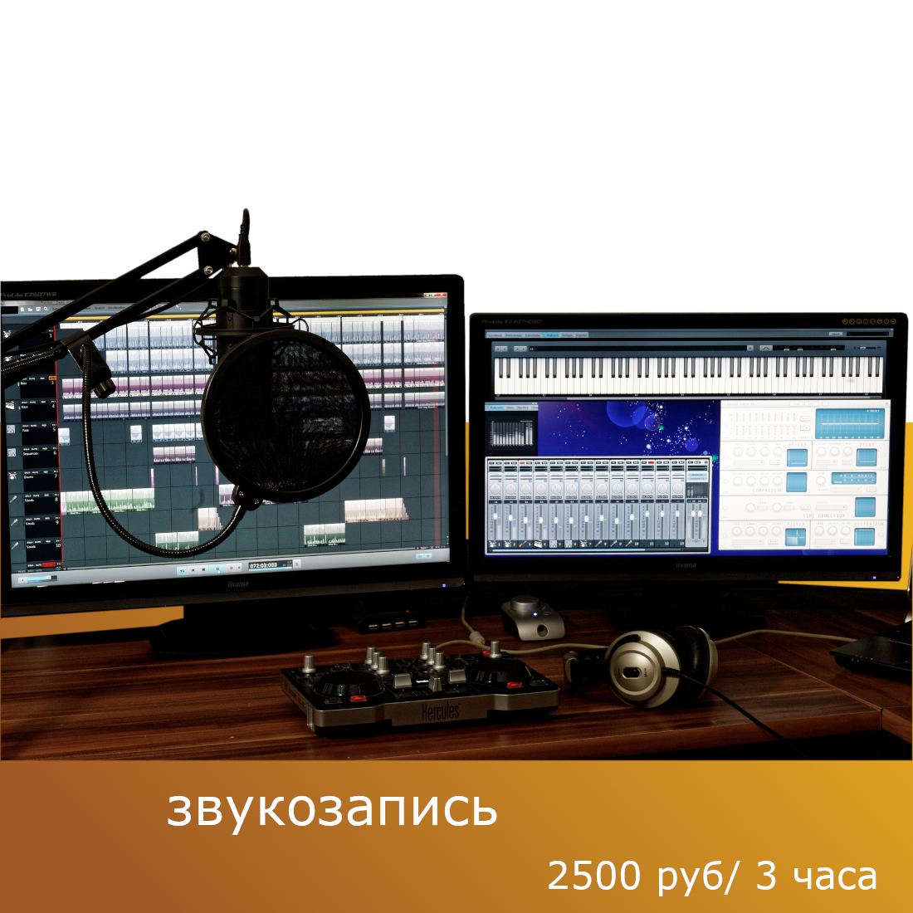

В нашей студии мы верим, что музыка — это не просто искусство, а способ самовыражения и источник вдохновения. Мы предлагаем уникальные курсы по обучению пению, игре на гитаре, пианино и многим другим музыкальным инструментам. Наша цель — помочь каждому ученику раскрыть свой талант и достичь музыкальных высот. Также мы предоставлием услуги записи и продюсирования музыки.
 |
||
|---|---|---|
Микрофоны:
Аудио интерфейс:
Наушники:
Email: audioatelier@email.com
Телефон: +7 (123) 456-78-90
wk: AudioAtelier